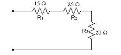
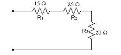

Me encontraba una tarde viajando hacia san gil, de repente me quedé mirando el atardecer, pensé: “¡oh, qué bello atardecer”

analizando lo demás del paisaje me di cuenta que había una torre de distribución entonces me dije a mi misma: “¿qué tipo de circuito tendrá esta torre?, ¿será circuito paralelo?


¿O será circuito en serie?”
 

Analicé unos segundos y seguí mi camino, la verdad nunca respondí a mi duda, al llegar a San Gil vi un cartel grande, ¡promociones en tommy!

Así que ingresé al centro comercial a comprarme algo de esta tienda, sinceramente nada me gustó así que salí y mejor me compré un perro

solo que no sabía que nombre ponerle, acudí a mis amigas para preguntarles qué nombre le podía poner a mi nueva mascota, ellas me dijeron que le pusiera Mike como nombre, luego entré al grupo de la familia y mi tía había enviado esta hermosa

foto con un mensaje el cual decía ¡feliz semana! Fue bastante emotivo:)